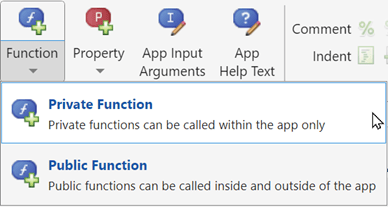

Reuse Code in Apps Using Helper Functions
Helper functions are MATLAB® functions that you define to use in your app. After you define a helper function, you can call it at different places in your app code. For example, you can call a helper function to update a plot after an app user changes a number on a slider or selects an item in a drop-down list. Creating a helper function allows you to single-source the common commands and avoid maintaining redundant code.
You can define helper functions in your app in App Designer or in a MATLAB program file. Choose an approach based on how the function code interacts with your app.
| Approach | When to Use |
|---|---|
| Create helper function in App Designer. |
|
Create helper function in MATLAB program file (.m). |
|
Create Helper Function in App Designer
There are two types of helper functions you can create in App Designer: private functions, which you can call only inside your app, and public functions, which you can call either inside or outside your app. Private functions are commonly used in single-window apps, while public functions are commonly used in multiwindow apps.
Create a helper function in App Designer from Code View. In the Editor tab of the toolstrip, click Function, then select Private Function or Public Function.

When you make your selection, App Designer creates a template function within the
app code and places your cursor in the body of that function. Then you can update
the function name and its arguments, and add your code to the function body. The
app argument is required, and you can use the
app input to access components and properties in the app. You
can include any additional arguments after the app
argument.
For example, this function, named updatePlot, creates a surface
plot of the peaks function. It accepts an additional argument
n for specifying the number of samples to display in the
plot.
function updatePlot(app,n) surf(app.UIAxes,peaks(n)); colormap(app.UIAxes,winter); end
Call Private Function
Define a private function when you want to call the function only from within the app where you define it. You can call the function from anywhere in your app.
For example, if your app contains a slider and a drop-down component that
control parameters on the same plot, define the updatePlot
function as a private function. Update the plotted data when either of the
component values change by calling the updatePlot function
from the component callback functions.
function SliderValueChanged(app,event) value = app.Slider.Value; updatePlot(app,value) end function DropDownValueChanged(app,event) value = app.DropDown.Value; num = str2double(value); updatePlot(app,num) end
Call Public Function
Define a public function when you want to call the function from outside the app while the app is running. Public functions are useful when you have a multiwindow app composed of multiple app files. You can call a public function defined in one of the apps from another app.
For example, if you have a main app with a button that creates a secondary app
with a plot, define the updatePlot function as a public
function. Update the plot from the main app by calling the
updatePlot function from the
ButtonPushedFcn callback.
function CreatePlotButtonPushed(app,event) secondaryApp = MyPlotApp; updatePlot(secondaryApp,10) end
For more information about multiwindow apps, see Create Multiwindow Apps in App Designer.
Manage Helper Functions
You can manage helper functions that you define in App Designer by using the Code Browser. For example, you can use the Code Browser to perform these tasks:
View all helper functions defined in App Designer — In the Code Browser in Code View, select the Functions tab.
Search for a helper function — At the top of the Functions tab, use the Search box.
Rename a helper function — Double-click the function name and type a new name. App Designer automatically updates all references to the function in your app code when you change the name.
Navigate to a helper function — Click the function name to scroll the function definition into view. Right-click the function name and select Go to to place your cursor in the function.
Delete a helper function — Right-click the function name and select Delete.
Create Helper Function in MATLAB Program File
To reuse code between multiple independent apps or projects, define a helper function outside of App Designer, in a MATLAB program file. If you have existing code in a script, you can convert the script to a function. For more information, see Scripts vs. Functions.
To create a new function that your app can call, follow these steps:
Create a new function file in MATLAB. For more information, see Create Functions in Files.
Define function inputs for data the function needs from the app, such as component values.
Define function outputs for data the app needs from the function, such as results of calculations.
Add the function file to a place that the app file can access, such as in the same folder as the app file or on the MATLAB search path.
You can then call the function from your app code.
For example, to display the number of days between a selected date and the current
date, you can create a MATLAB function that performs the date calculations. Create a function file
named calculateDate.m in the same folder as your app file. Define
the function to take in a date and return the number of days between the current day
and that date.
function numdays = calculateDate(date) dur = date - datetime("today"); numdays = days(dur); end
Call this function from your app code in App Designer. For example, if your app
contains a date picker, call the calculateDate function from the
ValueChangedFcn callback for the date picker to update your
app.
function DatePickerValueChanged(app,event) value = app.DatePicker.Value; numdays = calculateDate(value); app.CountdownLabel.Text = "Your date is " + numdays + " days away"; end
Example: Helper Function That Updates Plot
This app shows how to use a helper function to both initialize and update a plot. The app calls the updatePlot private helper function at the end of the startupFcn callback to initialize a plot when the app starts up. The UITableDisplayDataChanged callback also calls the updatePlot function to update the same plot when the user sorts columns or changes a value in the table.